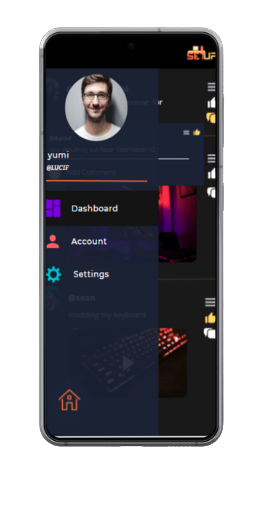

LEARN
In this section of our app, we can help the users to be more knowledgeable about the PC parts and peripherals. As we have said on our tagline, our app is your one way ticket to the PC master race.
RECO
In this section of our app, we can help our users to have an idea about the things they can buy according to their budget. Having this feature in our app can help users save time in browsing items that is fit in their budget.
SOCIAL
In this section of our app, the users of our app can talk to the other users. The user can post medias such as videos or photos and also, share their ideas, reviews, questions or recommendations.
TROUBLESHOOT
In this section of our app, the user can ask the problems that they have encounter when they are using the app. They can have the solution to their problems much faster than asking the community in the social feature of the app.


Your one way ticket to PC master race. Get a realtime support and assistance. Download our app now!